Line plot
Create a line plot.
ggline(data, x, y, group = 1, combine = FALSE, merge = FALSE, color = "black", palette = NULL, linetype = "solid", plot_type = c("b", "l", "p"), size = 0.5, shape = 19, title = NULL, xlab = NULL, ylab = NULL, facet.by = NULL, panel.labs = NULL, short.panel.labs = TRUE, select = NULL, remove = NULL, order = NULL, add = "none", add.params = list(), error.plot = "errorbar", label = NULL, font.label = list(size = 11, color = "black"), label.select = NULL, repel = FALSE, label.rectangle = FALSE, show.line.label = FALSE, ggtheme = theme_pubr(), ...)
Arguments
- data
- a data frame
- x, y
- x and y variables for drawing.
- group
- grouping variable to connect points by line. Allowed values are 1 (for one line, one group) or a character vector specifying the name of the grouping variable (case of multiple lines).
- combine
- logical value. Default is FALSE. Used only when y is a vector containing multiple variables to plot. If TRUE, create a multi-panel plot by combining the plot of y variables.
- merge
- logical or character value. Default is FALSE. Used only when y is a vector containing multiple variables to plot. If TRUE, merge multiple y variables in the same plotting area. Allowed values include also "asis" (TRUE) and "flip". If merge = "flip", then y variables are used as x tick labels and the x variable is used as grouping variable.
- color
- line colors.
- palette
- the color palette to be used for coloring or filling by groups. Allowed values include "grey" for grey color palettes; brewer palettes e.g. "RdBu", "Blues", ...; or custom color palette e.g. c("blue", "red"); and scientific journal palettes from ggsci R package, e.g.: "npg", "aaas", "lancet", "jco", "ucscgb", "uchicago", "simpsons" and "rickandmorty".
- linetype
- line type.
- plot_type
- plot type. Allowed values are one of "b" for both line and point; "l" for line only; and "p" for point only. Default is "b".
- size
- Numeric value (e.g.: size = 1). change the size of points and outlines.
- shape
- point shapes.
- title
- plot main title.
- xlab
- character vector specifying x axis labels. Use xlab = FALSE to hide xlab.
- ylab
- character vector specifying y axis labels. Use ylab = FALSE to hide ylab.
- facet.by
- character vector, of length 1 or 2, specifying grouping variables for faceting the plot into multiple panels. Should be in the data.
- panel.labs
- a list of one or two character vectors to modify facet panel labels. For example, panel.labs = list(sex = c("Male", "Female")) specifies the labels for the "sex" variable. For two grouping variables, you can use for example panel.labs = list(sex = c("Male", "Female"), rx = c("Obs", "Lev", "Lev2") ).
- short.panel.labs
- logical value. Default is TRUE. If TRUE, create short labels for panels by omitting variable names; in other words panels will be labelled only by variable grouping levels.
- select
- character vector specifying which items to display.
- remove
- character vector specifying which items to remove from the plot.
- order
- character vector specifying the order of items.
- add
- character vector for adding another plot element (e.g.: dot plot or error bars). Allowed values are one or the combination of: "none", "dotplot", "jitter", "boxplot", "point", "mean", "mean_se", "mean_sd", "mean_ci", "mean_range", "median", "median_iqr", "median_mad", "median_range"; see ?desc_statby for more details.
- add.params
- parameters (color, shape, size, fill, linetype) for the argument 'add'; e.g.: add.params = list(color = "red").
- error.plot
- plot type used to visualize error. Allowed values are one of c("pointrange", "linerange", "crossbar", "errorbar", "upper_errorbar", "lower_errorbar", "upper_pointrange", "lower_pointrange", "upper_linerange", "lower_linerange"). Default value is "pointrange" or "errorbar". Used only when add != "none" and add contains one "mean_*" or "med_*" where "*" = sd, se, ....
- label
- the name of the column containing point labels. Can be also a character vector with length = nrow(data).
- font.label
- a list which can contain the combination of the following elements: the size (e.g.: 14), the style (e.g.: "plain", "bold", "italic", "bold.italic") and the color (e.g.: "red") of labels. For example font.label = list(size = 14, face = "bold", color ="red"). To specify only the size and the style, use font.label = list(size = 14, face = "plain").
- label.select
- can be of two formats:
- a character vector specifying some labels to show.
- a list containting one or the
combination of the following components:
-
top.upandtop.down: to display the labels of the top up/down points. For example,label.select = list(top.up = 10, top.down = 4). -
criteria: to filter, for example, by x and y variabes values, use this:label.select = list(criteria = "`y` > 2 & `y` < 5 & `x` %in% c('A', 'B')").
-
- repel
- a logical value, whether to use ggrepel to avoid overplotting text labels or not.
- label.rectangle
- logical value. If TRUE, add rectangle underneath the text, making it easier to read.
- show.line.label
- logical value. If TRUE, shows line labels.
- ggtheme
- function, ggplot2 theme name. Default value is theme_pubr(). Allowed values include ggplot2 official themes: theme_gray(), theme_bw(), theme_minimal(), theme_classic(), theme_void(), ....
- ...
- other arguments to be passed to geom_dotplot.
Details
The plot can be easily customized using the function ggpar(). Read ?ggpar for changing:
- main title and axis labels: main, xlab, ylab
- axis limits: xlim, ylim (e.g.: ylim = c(0, 30))
- axis scales: xscale, yscale (e.g.: yscale = "log2")
- color palettes: palette = "Dark2" or palette = c("gray", "blue", "red")
- legend title, labels and position: legend = "right"
- plot orientation : orientation = c("vertical", "horizontal", "reverse")
See also
Examples
# Data df <- data.frame(dose=c("D0.5", "D1", "D2"), len=c(4.2, 10, 29.5)) print(df)#> dose len #> 1 D0.5 4.2 #> 2 D1 10.0 #> 3 D2 29.5# Basic plot # +++++++++++++++++++++++++++ ggline(df, x = "dose", y = "len")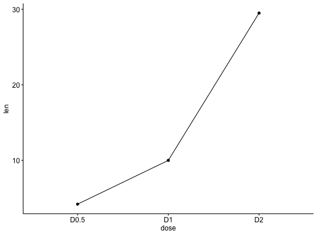# Plot with multiple groups # +++++++++++++++++++++ # Create some data df2 <- data.frame(supp=rep(c("VC", "OJ"), each=3), dose=rep(c("D0.5", "D1", "D2"),2), len=c(6.8, 15, 33, 4.2, 10, 29.5)) print(df2)#> supp dose len #> 1 VC D0.5 6.8 #> 2 VC D1 15.0 #> 3 VC D2 33.0 #> 4 OJ D0.5 4.2 #> 5 OJ D1 10.0 #> 6 OJ D2 29.5# Plot "len" by "dose" and # Change line types and point shapes by a second groups: "supp" ggline(df2, "dose", "len", linetype = "supp", shape = "supp")# Change colors # +++++++++++++++++++++ # Change color by group: "supp" # Use custom color palette ggline(df2, "dose", "len", linetype = "supp", shape = "supp", color = "supp", palette = c("#00AFBB", "#E7B800"))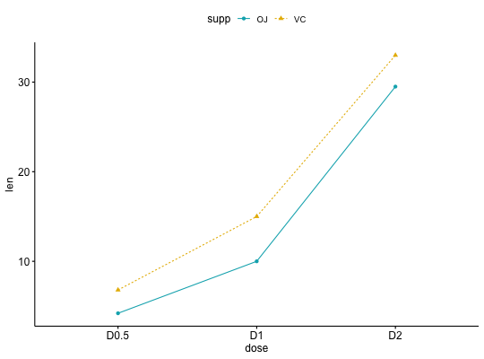# Add points and errors # ++++++++++++++++++++++++++ # Data: ToothGrowth data set we'll be used. df3 <- ToothGrowth head(df3, 10)#> len supp dose #> 1 4.2 VC 0.5 #> 2 11.5 VC 0.5 #> 3 7.3 VC 0.5 #> 4 5.8 VC 0.5 #> 5 6.4 VC 0.5 #> 6 10.0 VC 0.5 #> 7 11.2 VC 0.5 #> 8 11.2 VC 0.5 #> 9 5.2 VC 0.5 #> 10 7.0 VC 0.5# It can be seen that for each group we have # different values ggline(df3, x = "dose", y = "len")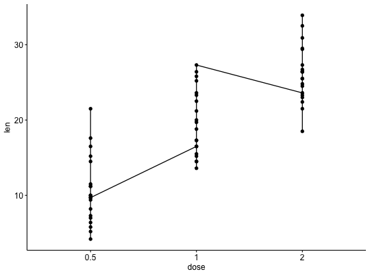# Visualize the mean of each group ggline(df3, x = "dose", y = "len", add = "mean")# Add error bars: mean_se # (other values include: mean_sd, mean_ci, median_iqr, ....) # Add labels ggline(df3, x = "dose", y = "len", add = "mean_se")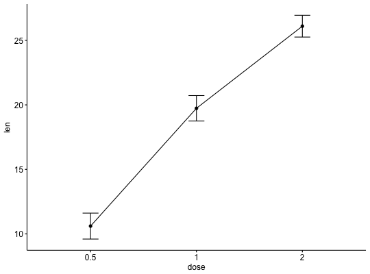# Change error.plot to "pointrange" ggline(df3, x = "dose", y = "len", add = "mean_se", error.plot = "pointrange")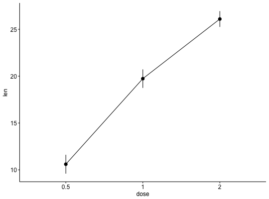# Add jitter points and errors (mean_se) ggline(df3, x = "dose", y = "len", add = c("mean_se", "jitter"))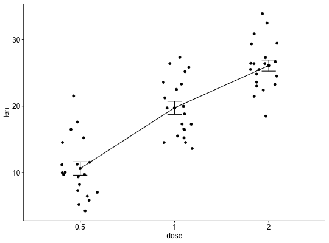# Add dot and errors (mean_se) ggline(df3, x = "dose", y = "len", add = c("mean_se", "dotplot"), color = "steelblue")#>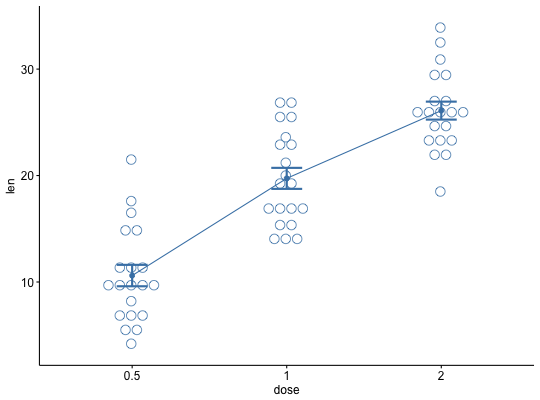# Add violin and errors (mean_se) ggline(df3, x = "dose", y = "len", add = c("mean_se", "violin"), color = "steelblue")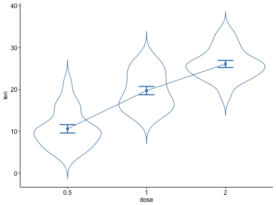# Multiple groups with error bars # ++++++++++++++++++++++ ggline(df3, x = "dose", y = "len", color = "supp", add = "mean_se", palette = c("#00AFBB", "#E7B800"))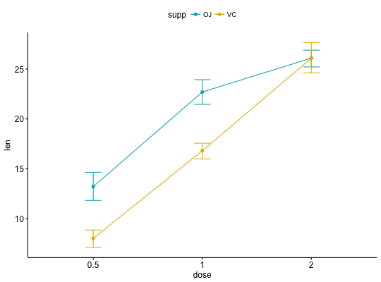# Add jitter ggline(df3, x = "dose", y = "len", color = "supp", add = c("mean_se", "jitter"), palette = c("#00AFBB", "#E7B800"))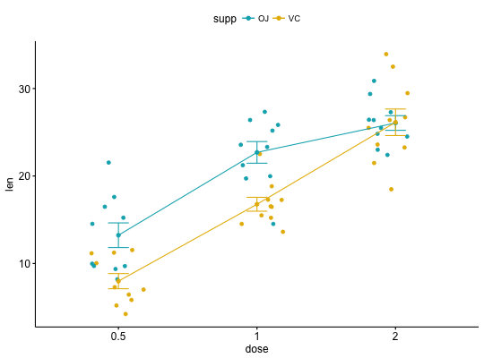# Add dot plot ggline(df3, x = "dose", y = "len", color = "supp", add = c("mean_se", "dotplot"), palette = c("#00AFBB", "#E7B800"))#>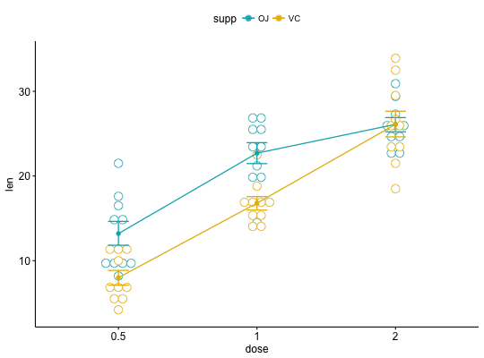